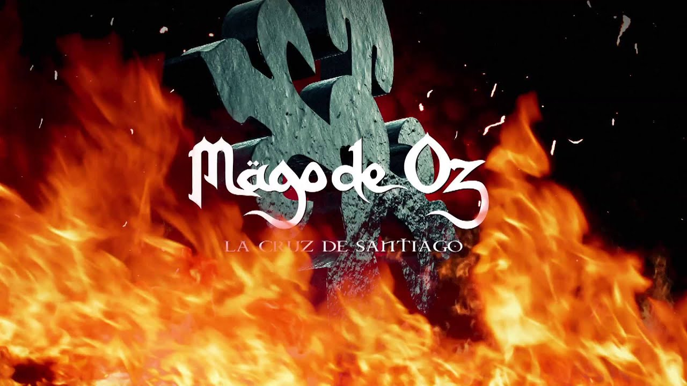
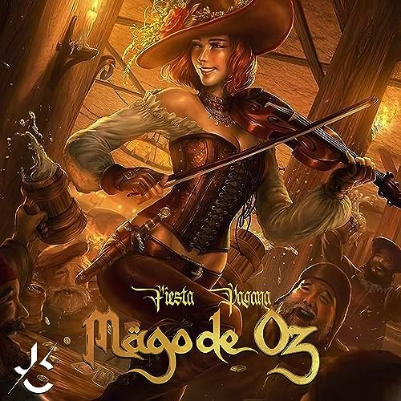

Álbum 2 - Finisterre (2000)
Finisterra es un álbum conceptual basado en la descripción de las condiciones de vida existente en una sociedad hipotética en un futuro no muy lejano...
Canciones del Álbum "Finisterra" - Mägo de Oz (2000)
| # | Canción | Duración |
|---|---|---|
| 1 | La Costa del Silencio | 6:18 |
| 2 | El Lago | 6:11 |
| 3 | Fiesta Pagana | 5:21 |
| 4 | La Rosa de los Vientos | 5:38 |
| 5 | El Atril | 4:19 |
| 6 | Hasta Que El Cuerpo Aguante | 5:43 |
| 7 | Un Poco de Fé | 6:10 |
| 8 | El Hata que el cuerpo aguante | 4:32 |
| 9 | El Fantasma de la Ópera | 4:51 |
| 10 | La Tierra de la Verdad | 5:31 |
| 11 | Finisterra | 5:44 |
Lista de canciones y reprodución:
- La cruz de Santiago 
- Hasta que el cuerpo aguante
- Fiesta Pagana 
Siguente Album